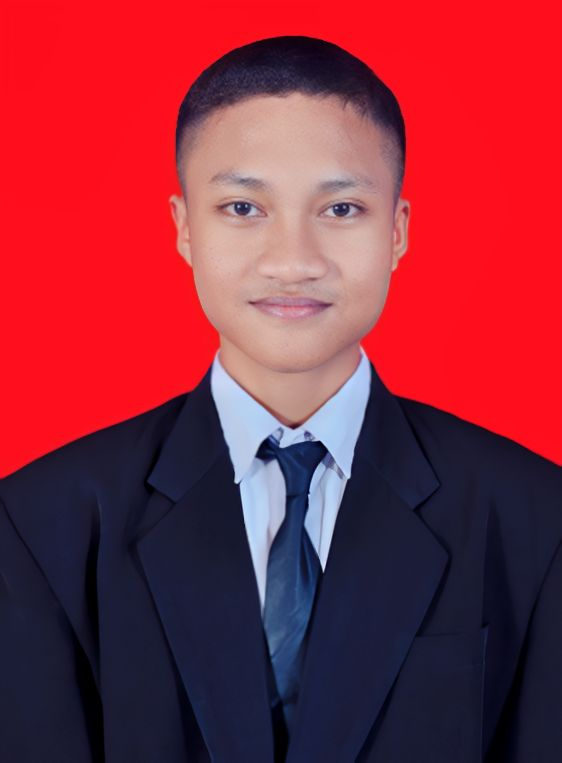

About Me
Halo, saya Abdurrohman Al Fathi, atau dikenal sebagai rohman / thi-web6, seorang cybersecurity enthusiast dari Bekasi, Indonesia. Saya mendalami penetration testing, kompetisi Capture The Flag (CTF), dan administrasi sistem Linux, dengan pencapaian seperti juara 3 LKS Cybersecurity 2025. Selain itu, saya aktif di berbagai organisasi dan kompetisi akademik, mengasah keterampilan teknis, kepemimpinan, dan pengabdian masyarakat sebagai anggota aktif SAKA SAR.

Pentester & Blue Team
- Tanggal Lahir: 28 Februari 2008
- GitHub: github.com/thi-web6
- Telepon: +62 857-7667-1279
- Kota: Bekasi Utara, Indonesia
- Usia: —
- Pendidikan: SMK Taruna Bangsa
- Email: [email protected]
- Status CTF: Tersedia
Skills
Keahlian utama terfokus pada keamanan siber, penetration testing dan CTF. Terampil dalam administrasi sistem Linux (Red Hat, Fedora, CentOS, Ubuntu), analisis forensik digital, hardening sistem, serta maintenance aplikasi perbankan seperti RTGS, Sysmon, dan SKNBI dengan monitoring Grafana dan Prometheus.
Resume
Siswa SMK Taruna Bangsa dengan spesialisasi keamanan siber dan teknologi informasi, berpengalaman dalam CTF, administrasi sistem Linux, penilaian kompetensi ITNSA sebagai juri, dan maintenance aplikasi perbankan.
Ringkasan
Abdurrohman Al Fathi
Pengalaman 3+ tahun sebagai Linux System Administrator, fokus pada hardening, konfigurasi server, dan deteksi ancaman. Terampil dalam pentesting, CTF, dokumentasi teknis (write-up), penilaian ITNSA sebagai juri, dan maintenance aplikasi perbankan (RTGS, Sysmon, SKNBI). Menguasai Fedora/CentOS/Ubuntu, SELinux, firewall, Bash scripting, Snort, Fail2Ban, Grafana, Prometheus, dan Apache Airflow.
- SMKS Taruna Bangsa, Kota Bekasi, Indonesia
- +62 857-7667-1279
- [email protected]
Pendidikan
SMK Taruna Bangsa, Bekasi
2023 - 2026
Rekayasa Perangkat Lunak
Mempelajari keamanan siber, administrasi sistem, dan pengembangan perangkat lunak, dengan fokus pada teknologi jaringan dan aplikasi.
Pencapaian Akademik
Peringkat 3 LKS CyberSecurity CTF
22 Januari 2025
Lomba Kompetensi Siswa - Kota Bekasi
Peringkat 4 LKS CyberSecurity CTF
23 April 2024
Lomba Kompetensi Siswa - Kota Bekasi
Medali Emas Bahasa Arab, Matematika & Biologi
9 Januari 2024
Fosnas Event - Kompetisi Nasional
Pengalaman Organisasi
Sekretaris Inti/BPH OSIS SMK Taruna Bangsa
2024 - 2025
SMK Taruna Bangsa, Bekasi
Mengelola administrasi dan mengkoordinasikan kegiatan sekolah, meningkatkan keterampilan komunikasi dan manajerial.
Anggota Tim Tahfidz & Olimpiade Matematika
2023 - 2026
SMK Taruna Bangsa, Bekasi
Pengalaman Teknis
IT Staff Intern — System Administrator & Grafana Researcher
20 Mei 2025 - 20 November 2025
PT. Nesyer Lintas Teknologi, Jakarta Barat
Client: Bank Kalimantan Tengah (Palangka Raya)
- Remote maintenance & monitoring infrastruktur IT aplikasi perbankan critical (RTGS, Sysmon, SKNBI) via VPN khusus client.
- R&D Grafana dashboard untuk real-time monitoring, deteksi anomali, dan security logging — integrasi Prometheus dengan konfigurasi target custom.
- Integrasi Sysmon untuk performance tracking, alerting, incident response, dan log analysis keamanan secara remote.
- Workflow otomatisasi dengan Apache Airflow: maintenance scheduling, backup automation, dan health checks.
- Technical support konfigurasi Linux dan troubleshooting via VPN; laporan performa sistem dan rekomendasi perbaikan.
- On-site Trip 1 (18–21 Juni 2025): Palangka Raya — implementasi monitoring dashboard di lokasi client.
- On-site Trip 2 (16–18 Oktober 2025): Palangka Raya — integrasi log management infrastructure.
Juri LKS IT Network System Administration
14-15 Mei 2025
Lomba Kompetensi Siswa, Jakarta Pusat 1
- Menilai kompetensi peserta di bidang ITNSA: konfigurasi jaringan, keamanan server, dan administrasi sistem Linux.
- Memastikan standar penilaian adil dan relevan dengan kebutuhan industri.
- Memberikan feedback teknis kepada peserta untuk pengembangan keterampilan ITNSA.
Anggota SAKA SAR Kota Bekasi
3 Agustus 2025 - Sekarang
Satuan Karya Pramuka Penanggulangan Bencana
- Dilantik 3 Agustus 2025 — fokus pada PPGD dan pencarian & pertolongan (SAR).
- Pelatihan intensif penanggulangan bencana, navigasi darat, dan teknik penyelamatan korban.
- Simulasi bencana dan latihan gabungan koordinasi respons darurat.
Analis Keamanan Aplikasi Web
2023 - 2024
Pengujian Keamanan & Hardening Sistem
- Hardening Linux CentOS 7: SELinux, Apache CSP, Fail2Ban brute-force mitigation.
- Identifikasi kerentanan web via exploitation dan reconnaissance.
- IDS setup (Snort/Suricata) untuk SQL Injection & XSS detection.
- Dokumentasi teknis (write-up) setiap proses pentesting dan hardening.
CTF_STATS.json
Certificates
Sertifikat sebagai bukti kompetensi dan dedikasi di bidang keamanan siber dan teknologi. Klik untuk melihat gambar sertifikat.
{kind=link}
{kind=link}
{kind=link}
{kind=link}
{kind=link}
{kind=link}
{kind=link}
{kind=link}
Pico CTF
Bergabunglah dengan ekosistem Capture The Flag — tempat kemampuan keamanan siber diuji dengan tantangan dunia nyata. Dari web exploitation hingga reverse engineering, setiap challenge adalah kesempatan belajar yang sesungguhnya.
Web Exploitation
Mengeksploitasi kerentanan aplikasi web untuk memahami dan melindungi sistem dari serangan nyata seperti SQL Injection, XSS, dan CSRF.
Cryptography
Studi dan praktik pengamanan informasi melalui teknik enkripsi, dekripsi, dan analisis cipher klasik maupun modern.
Binary Exploitation
Memanfaatkan kelemahan perangkat lunak biner - buffer overflow, ROP chains - untuk memahami memory safety dan mitigasinya.
Digital Forensics
Investigasi dan analisis bukti digital untuk mengungkap kejahatan komputer, memory forensics, dan analisis traffic jaringan.
Reverse Engineering
Analisis binary dan perangkat lunak menggunakan tools seperti Ghidra dan radare2 untuk memahami fungsionalitas dan kerentanannya.
Steganography
Menyembunyikan dan menemukan pesan tersembunyi dalam media digital: gambar, audio, dan video menggunakan teknik steganalysis.